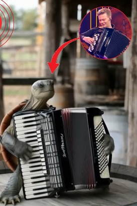

DOLANGUE NEWS
Papa francisco é flagrado cheio de vigor curtindo o carnaval em Macaé-RJ
Foliões afirmam terem dançado com ele na "pipoca"

Tartaruga flagrada tocando sanfona chama atenção pela sua semelhança com o cantor Michel Teló
"É ele mesmo?" Questiona moradora emocionada
É fake que o prefeito de Caruaru-PE colocou ventilador gigante para refrescar moradores
Com profundo realismo, vídeo intrigou moradores